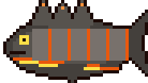

Kraterwächter!
Ein gepanzerter Riese aus Basalt mit einer Krone aus Kraterzacken. Er zeigt sich erst, wenn du 25 Lava-Kreaturen besiegt hast, und nur an einer Drachenknochenrute oder besser. „Wer hat meine Kreaturen verhauen? Ach, du.“

Ein gepanzerter Riese aus Basalt mit einer Krone aus Kraterzacken. Er zeigt sich erst, wenn du 25 Lava-Kreaturen besiegt hast, und nur an einer Drachenknochenrute oder besser. „Wer hat meine Kreaturen verhauen? Ach, du.“
